Correlación
Miguel Tripp
2021-07-04
Last updated: 2021-07-04
Checks: 7 0
Knit directory: 2021/
This reproducible R Markdown analysis was created with workflowr (version 1.6.2). The Checks tab describes the reproducibility checks that were applied when the results were created. The Past versions tab lists the development history.
Great! Since the R Markdown file has been committed to the Git repository, you know the exact version of the code that produced these results.
Great job! The global environment was empty. Objects defined in the global environment can affect the analysis in your R Markdown file in unknown ways. For reproduciblity it’s best to always run the code in an empty environment.
The command set.seed(20210412) was run prior to running the code in the R Markdown file. Setting a seed ensures that any results that rely on randomness, e.g. subsampling or permutations, are reproducible.
Great job! Recording the operating system, R version, and package versions is critical for reproducibility.
Nice! There were no cached chunks for this analysis, so you can be confident that you successfully produced the results during this run.
Great job! Using relative paths to the files within your workflowr project makes it easier to run your code on other machines.
Great! You are using Git for version control. Tracking code development and connecting the code version to the results is critical for reproducibility.
The results in this page were generated with repository version f42c33c. See the Past versions tab to see a history of the changes made to the R Markdown and HTML files.
Note that you need to be careful to ensure that all relevant files for the analysis have been committed to Git prior to generating the results (you can use wflow_publish or wflow_git_commit). workflowr only checks the R Markdown file, but you know if there are other scripts or data files that it depends on. Below is the status of the Git repository when the results were generated:
Ignored files:
Ignored: .Rhistory
Ignored: .Rproj.user/
Untracked files:
Untracked: Curso_Bioestadistica_MTripp_cuatriII.docx
Untracked: Curso_Bioestadistica_MTripp_cuatriII.pdf
Untracked: Diapositivas/
Untracked: Prueba_markdown.Rmd
Untracked: Prueba_markdown.pdf
Untracked: README.html
Untracked: Resources/
Untracked: Tarea_Tstudent.Rmd
Untracked: Tarea_Tstudent.docx
Untracked: Tarea_Tstudent.html
Untracked: Tarea_Tstudent.pdf
Untracked: analysis/images/
Untracked: code/tarea_macrograd.R
Untracked: data/CS_subset.csv
Untracked: data/Consumo_oxigeno_wide.csv
Untracked: data/Darwin_esp.csv
Untracked: data/Data_enzimas_Experimento1.txt
Untracked: data/Data_enzimas_Experimento2.txt
Untracked: data/Data_enzimas_Experimento3.txt
Untracked: data/Data_enzimas_Experimento4.txt
Untracked: data/DownloadFestival(No Outlier).dat
Untracked: data/Festival.csv
Untracked: data/LungCapData.txt
Untracked: data/LungCapDataEsp.csv
Untracked: data/RExam.dat
Untracked: data/Rexamendat.csv
Untracked: data/Tabla1_Muestreo.txt
Untracked: data/Transcriptome_Anotacion.csv
Untracked: data/Transcriptome_DGE.csv
Untracked: data/Vinogradov_2004_Titanic.tab
Untracked: data/Vinogradov_2004_Titanic.tab.csv
Untracked: data/data_tukey.txt
Untracked: data/datasets_Pokemon.csv
Untracked: data/datasets_Pokemon.xls
Untracked: data/exp_macrogard_growth.tab
Untracked: data/exp_macrogard_rna-dna.tab
Untracked: data/fertilizantes_luz.csv
Untracked: data/macrogard_crecimiento.csv
Untracked: data/penguins_size.csv
Untracked: data/pokemon_extended.csv
Untracked: output/Plot_all_penguins.pdf
Untracked: output/Plot_all_penguins.tiff
Untracked: output/graficos/
Unstaged changes:
Modified: analysis/_site.yml
Note that any generated files, e.g. HTML, png, CSS, etc., are not included in this status report because it is ok for generated content to have uncommitted changes.
These are the previous versions of the repository in which changes were made to the R Markdown (analysis/Clase10_correlacion.Rmd) and HTML (docs/Clase10_correlacion.html) files. If you’ve configured a remote Git repository (see ?wflow_git_remote), click on the hyperlinks in the table below to view the files as they were in that past version.
| File | Version | Author | Date | Message |
|---|---|---|---|---|
| html | 392444f | Miguel Tripp | 2021-07-04 | Build site. |
| Rmd | 4150ad4 | Miguel Tripp | 2021-07-04 | Publish the initial files for myproject |
1 Generalidades
La correlación lineal y la regresión lineal simple son métodos estadísticos que estudian la relación lineal existente entre dos variables.
La correlación cuantifica como dos variables estan correlacionadas sin considerar dependencias. A nivel experimental, la correlación se suele emplear cuando ninguna de las variables se ha controlado, simplemente se han medido ambas y se desea saber si estan relacionadas.
Los coeficientes de correlación se pueden calcular mediante métodos paramétricos y no paramétricos. Un coeficiente paramétrico es el Coeficiente de Correlación de Pearson, que se usa para observaciones obtenidas sobre una escala de intervalos y esta sujeto a condiciones mas restrictivas que las alternativas no paramétricas. De estas, una de las mas ampliamente utilizadas es el Coeficiente de Correlación por Rangos de Spearman.
Todos los coeficientes de corelación varían entre +1 y -1, siendo +1 una correlación positiva perfecta y -1 una correlación negativa perfecta:
 Además del valor obtenido para el coeficiente de correlación, es necesario calcular su significancia. Solo si el valor p es significativo se puede aceptar que existe correlación, y esta será de la magnitud que indique el coeficiente.
Además del valor obtenido para el coeficiente de correlación, es necesario calcular su significancia. Solo si el valor p es significativo se puede aceptar que existe correlación, y esta será de la magnitud que indique el coeficiente.
Por muy cercano que sea el valor del coeficiente de correlación a +1 o −1, si no es significativo, se ha de interpretar que la correlación de ambas variables es 0, ya que el valor observado puede deberse a simple aleatoriedad.
2 Ejemplo1: Calor y venta de helados

library(tidyverse)
library(rstatix)
library(ggpubr)
temp <- c(14.2, 16.4, 11.9, 15.2, 18.5, 22.1, 19.4, 25.1, 23.4, 18.1, 22.6, 17.2)
ventas <- c(215, 325, 185, 332, 406, 522, 412, 614, 544, 421, 445, 408)
helados <- data.frame(temp, ventas)
helados temp ventas
1 14.2 215
2 16.4 325
3 11.9 185
4 15.2 332
5 18.5 406
6 22.1 522
7 19.4 412
8 25.1 614
9 23.4 544
10 18.1 421
11 22.6 445
12 17.2 4082.1 Dispersión de los datos
En primer lugar se representan las dos variables mediante un diagrama de dispersión. Este se puede construir simplemte con la función plot o con la función pairs()
plot(helados)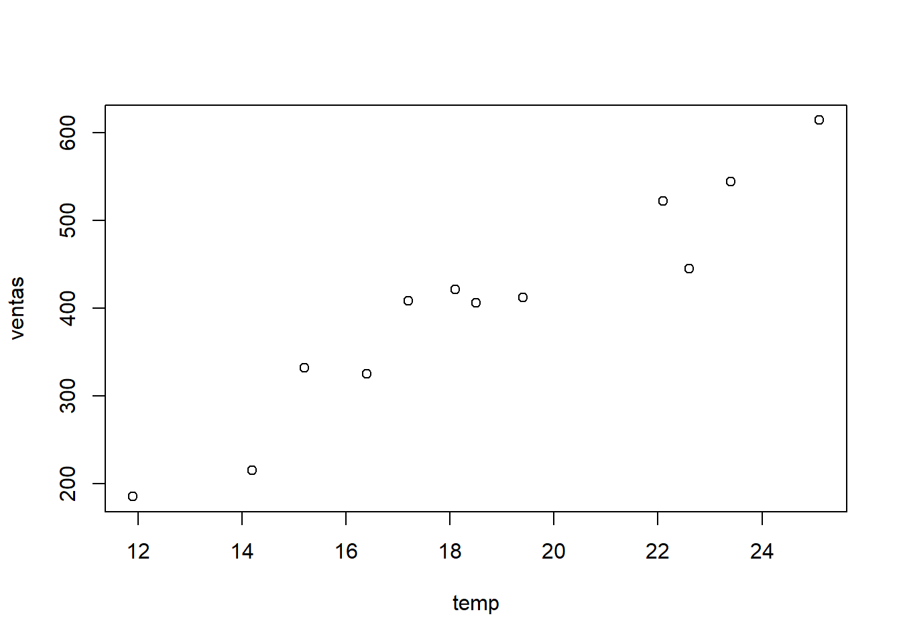
pairs(helados$temp ~ helados$ventas)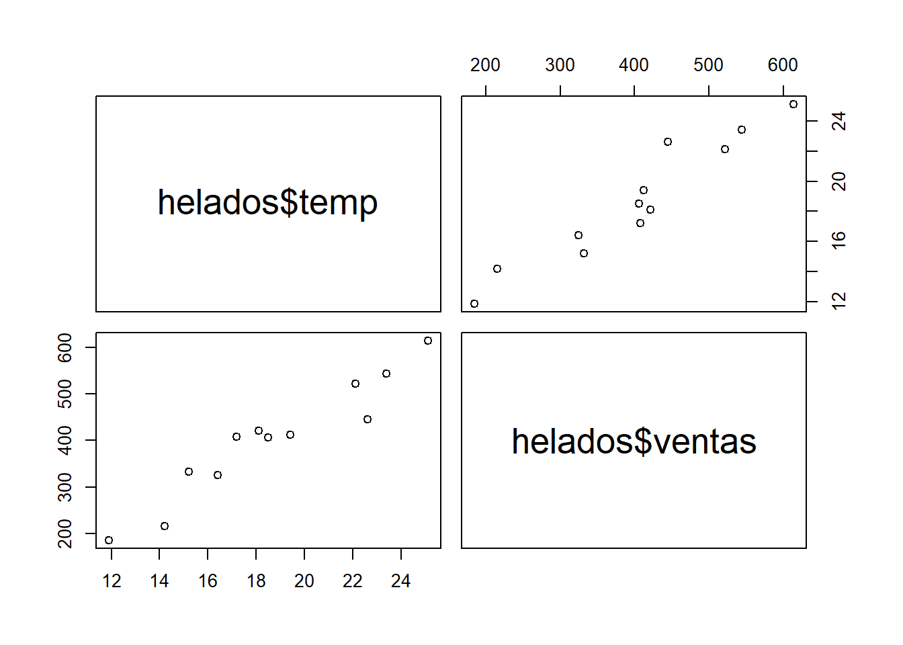
ggplot(helados, aes(x = temp, y = ventas))+
geom_point()+
labs(x = "Temperatura (°C)", y = "Ventas ($)",
title = "ventas de helados")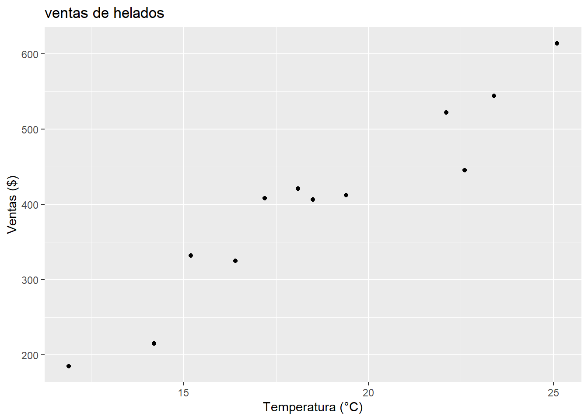
El diagrama de dispersión parecer indicar que existe una posible relación entre la temperatura del día con el número de ventas de helado.
Para poder elegir el coeficiente de correlación adecuando, se tiene que analizar el tipo de variable que se esta analizando y la distribución que presenta.
2.2 Análisis de normalidad
Utilizando métodos visuales con R base:
par(mfrow = c(2,2))
hist(helados$temp, col = "darkred")
qqnorm(helados$temp, col = "darkred")
qqline(helados$temp)
hist(helados$ventas, col = "blue")
qqnorm(helados$ventas, col = "blue")
qqline(helados$ventas)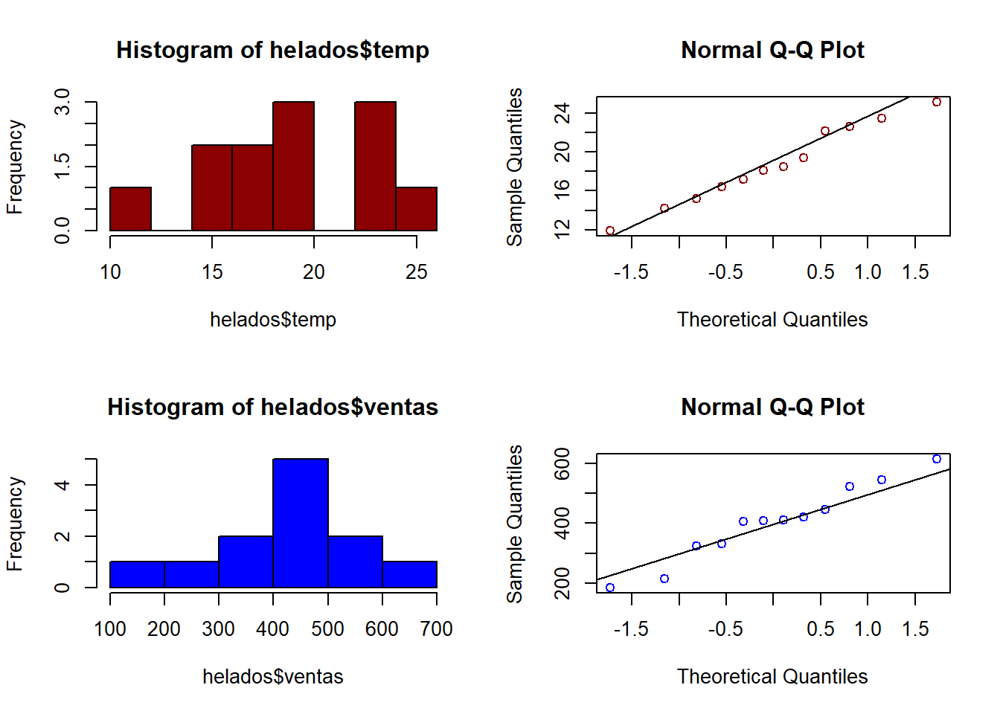
Realizando una prueba de Shapiro
sapply(helados, shapiro_test) temp ventas
variable "X[[i]]" "X[[i]]"
statistic 0.9759308 0.9615932
p.value 0.9620426 0.8063125El análisis gráfico y el contraste de normalidad muestran que para ambas variables se puede asumir normalidad. En caso contrario, se debe considerar el uso de alternativas como el calculo del coeficiente de Spearman o de Kendall.
2.3 Estimación de la correlación
Para realizar la estimación de la correlación se puede utilizar la función cor(). Dentro del parámetro method podemos establecer cual coeficiente queremos utilizar (Pearson, Kendall o Spearman).
cor(helados$ventas, helados$temp, method = "pearson")[1] 0.9575066#La función tambien acepta data.frame o matrices, lo que nos arroja los coeficientes para todas las variables contenidas en la tabla
cor(helados) temp ventas
temp 1.0000000 0.9575066
ventas 0.9575066 1.0000000La función nos arroja un coeficiente de correlación bastante alta (0.957). Sin embargo, por muy alto que pudiera ser, si no es significativa se ha de considerar inexistente. Para realizar la prueba de significancía de la correlación, se utiliza la función cor.test()
cor.test(helados$temp, helados$ventas, method = "pearson", alternative = "two.sided")
Pearson's product-moment correlation
data: helados$temp and helados$ventas
t = 10.499, df = 10, p-value = 1.016e-06
alternative hypothesis: true correlation is not equal to 0
95 percent confidence interval:
0.8515370 0.9883148
sample estimates:
cor
0.9575066 El coeficiente de correlación es altamente significativo por lo que podemos concluir que hay una correlación significativa entre la temperatura del día y la venta de helados en el dia (\(r = 0.957, valor p < 0.0001\))
2.4 Importancia de la visualización en la correlación
library(pastecs)
Attaching package: 'pastecs'The following objects are masked from 'package:dplyr':
first, lastThe following object is masked from 'package:tidyr':
extractascombe <- datasets::anscombe
sapply(ascombe, stat.desc) x1 x2 x3 x4 y1 y2
nbr.val 11.0000000 11.0000000 11.0000000 11.0000000 11.0000000 11.0000000
nbr.null 0.0000000 0.0000000 0.0000000 0.0000000 0.0000000 0.0000000
nbr.na 0.0000000 0.0000000 0.0000000 0.0000000 0.0000000 0.0000000
min 4.0000000 4.0000000 4.0000000 8.0000000 4.2600000 3.1000000
max 14.0000000 14.0000000 14.0000000 19.0000000 10.8400000 9.2600000
range 10.0000000 10.0000000 10.0000000 11.0000000 6.5800000 6.1600000
sum 99.0000000 99.0000000 99.0000000 99.0000000 82.5100000 82.5100000
median 9.0000000 9.0000000 9.0000000 8.0000000 7.5800000 8.1400000
mean 9.0000000 9.0000000 9.0000000 9.0000000 7.5009091 7.5009091
SE.mean 1.0000000 1.0000000 1.0000000 1.0000000 0.6125408 0.6125676
CI.mean.0.95 2.2281389 2.2281389 2.2281389 2.2281389 1.3648260 1.3648856
var 11.0000000 11.0000000 11.0000000 11.0000000 4.1272691 4.1276291
std.dev 3.3166248 3.3166248 3.3166248 3.3166248 2.0315681 2.0316567
coef.var 0.3685139 0.3685139 0.3685139 0.3685139 0.2708429 0.2708547
y3 y4
nbr.val 11.0000000 11.0000000
nbr.null 0.0000000 0.0000000
nbr.na 0.0000000 0.0000000
min 5.3900000 5.2500000
max 12.7400000 12.5000000
range 7.3500000 7.2500000
sum 82.5000000 82.5100000
median 7.1100000 7.0400000
mean 7.5000000 7.5009091
SE.mean 0.6121958 0.6122425
CI.mean.0.95 1.3640571 1.3641612
var 4.1226200 4.1232491
std.dev 2.0304236 2.0305785
coef.var 0.2707231 0.2707110Ahora estimamos los coeficientes de correlación para cada par de variables (x1, y1; x2, y2; x3, y3, etc)
cor(ascombe) x1 x2 x3 x4 y1 y2 y3
x1 1.0000000 1.0000000 1.0000000 -0.5000000 0.8164205 0.8162365 0.8162867
x2 1.0000000 1.0000000 1.0000000 -0.5000000 0.8164205 0.8162365 0.8162867
x3 1.0000000 1.0000000 1.0000000 -0.5000000 0.8164205 0.8162365 0.8162867
x4 -0.5000000 -0.5000000 -0.5000000 1.0000000 -0.5290927 -0.7184365 -0.3446610
y1 0.8164205 0.8164205 0.8164205 -0.5290927 1.0000000 0.7500054 0.4687167
y2 0.8162365 0.8162365 0.8162365 -0.7184365 0.7500054 1.0000000 0.5879193
y3 0.8162867 0.8162867 0.8162867 -0.3446610 0.4687167 0.5879193 1.0000000
y4 -0.3140467 -0.3140467 -0.3140467 0.8165214 -0.4891162 -0.4780949 -0.1554718
y4
x1 -0.3140467
x2 -0.3140467
x3 -0.3140467
x4 0.8165214
y1 -0.4891162
y2 -0.4780949
y3 -0.1554718
y4 1.0000000Ahora gráficamos cada uno de los pares
par(mfrow = c(2,2))
plot(ascombe$x1, ascombe$y1, col = "red", pch = 19)
plot(ascombe$x2, ascombe$y2, col = "blue", pch = 19)
plot(ascombe$x3, ascombe$y3, col = "darkorange", pch = 19)
plot(ascombe$x4, ascombe$y4, col = "salmon", pch = 19)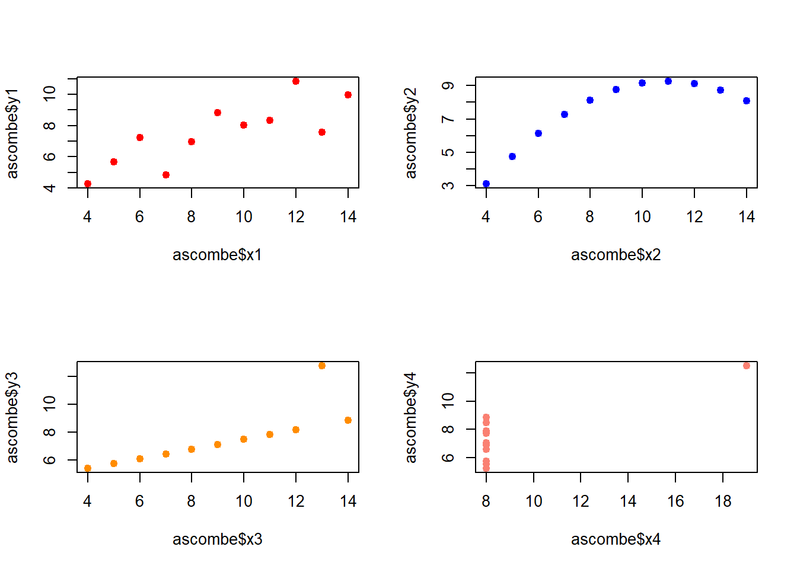
dev.off()null device
1 3 Ejemplo 2: Pokemon

Ahora vamos a análizar la correlación entre las distintas variables de la bases de datos de pokemon
pokemon<- readxl::read_excel("data/datasets_Pokemon.xls")
plot(pokemon)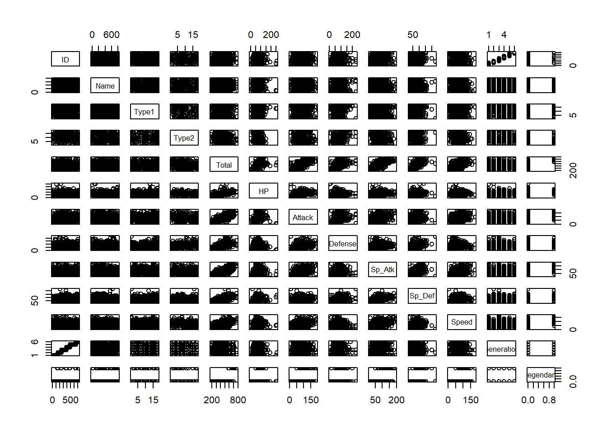
Seleccionar el nombre y todas las variables numéricas
pokemon_sub <- pokemon %>%
select(where(is.numeric), -Generation, -ID)
plot(pokemon_sub)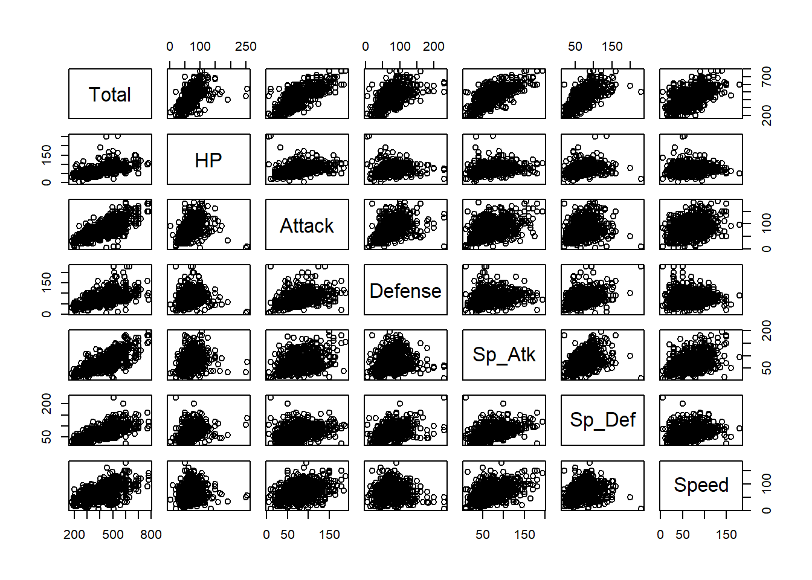
Ivestigar variables correlacionadas
cor(pokemon_sub) Total HP Attack Defense Sp_Atk Sp_Def Speed
Total 1.0000000 0.6187484 0.7362107 0.6127874 0.7472499 0.7176095 0.5759427
HP 0.6187484 1.0000000 0.4223860 0.2396223 0.3623799 0.3787181 0.1759521
Attack 0.7362107 0.4223860 1.0000000 0.4386871 0.3963618 0.2639896 0.3812397
Defense 0.6127874 0.2396223 0.4386871 1.0000000 0.2235486 0.5107466 0.0152266
Sp_Atk 0.7472499 0.3623799 0.3963618 0.2235486 1.0000000 0.5061214 0.4730179
Sp_Def 0.7176095 0.3787181 0.2639896 0.5107466 0.5061214 1.0000000 0.2591331
Speed 0.5759427 0.1759521 0.3812397 0.0152266 0.4730179 0.2591331 1.0000000Podemos usar la funcion pairs.panel() del paquete psych para visualziar los diagramas de disperción entre todas las variables asi como su valor de correlación.
psych::pairs.panels(pokemon_sub, method = "pearson", show.points = TRUE,stars = TRUE)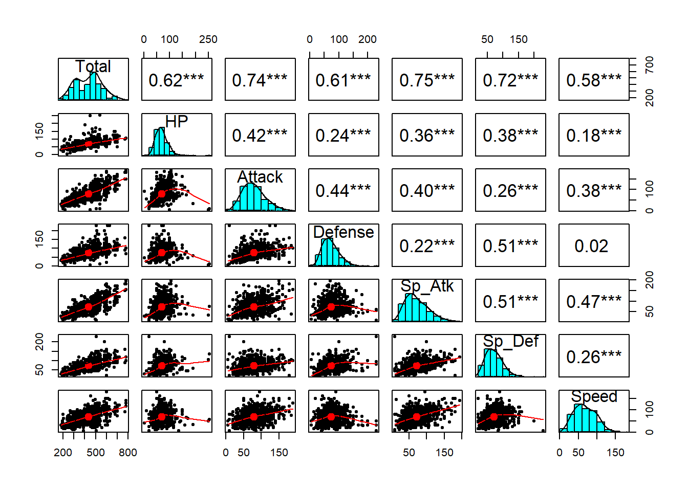
El paquete Psych tambien contien la función multi.hist()la cual nos ayudaria a evaluar la distribución de los datos: Donde la linea roja corresponde a la distribución normal ajustada y la linea azul a la densidad observada.
psych::multi.hist(pokemon_sub, density = TRUE, dcol = c("blue", "red"))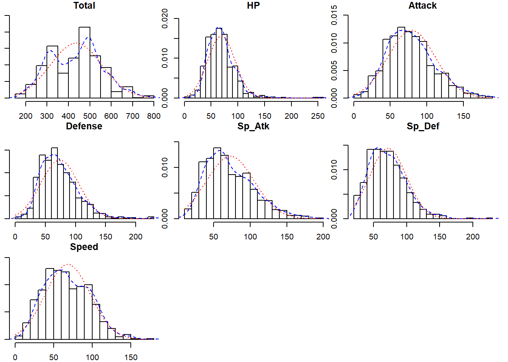
La función corrplot() del paquete corrplot recibe como argumento la matriz de correlaciones generada por la función cor() y genera diferentes tipos de heat maps mucho más visuales que la matriz numérica.
library(corrplot)corrplot 0.84 loadedcorrplot(corr = cor(x = pokemon_sub, method = "pearson"), method = "number", type = "upper")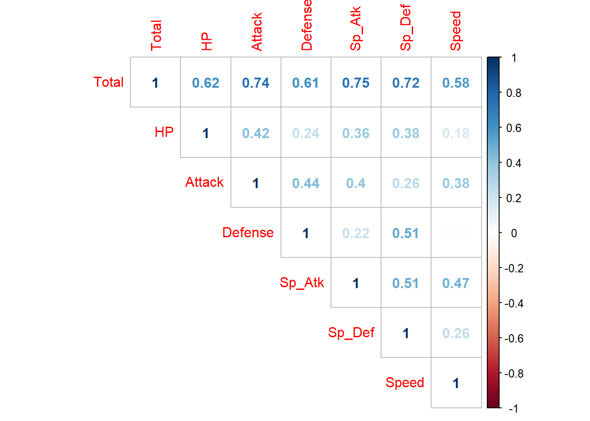
La función ggpairs() del paquete GGally basada en ggplot2 representa los diagramas de dispersión, el valor de la correlación e incluso interpreta el tipo de variable para que, en caso de ser categórica, representarla en forma de boxplot.
library(GGally)Registered S3 method overwritten by 'GGally':
method from
+.gg ggplot2ggpairs(pokemon_sub, lower = list(continuous = "smooth"),
diag = list(continuous = "bar"), axisLabels = "none")Warning in check_and_set_ggpairs_defaults("diag", diag, continuous =
"densityDiag", : Changing diag$continuous from 'bar' to 'barDiag'`stat_bin()` using `bins = 30`. Pick better value with `binwidth`.`stat_bin()` using `bins = 30`. Pick better value with `binwidth`.
`stat_bin()` using `bins = 30`. Pick better value with `binwidth`.
`stat_bin()` using `bins = 30`. Pick better value with `binwidth`.
`stat_bin()` using `bins = 30`. Pick better value with `binwidth`.
`stat_bin()` using `bins = 30`. Pick better value with `binwidth`.
`stat_bin()` using `bins = 30`. Pick better value with `binwidth`.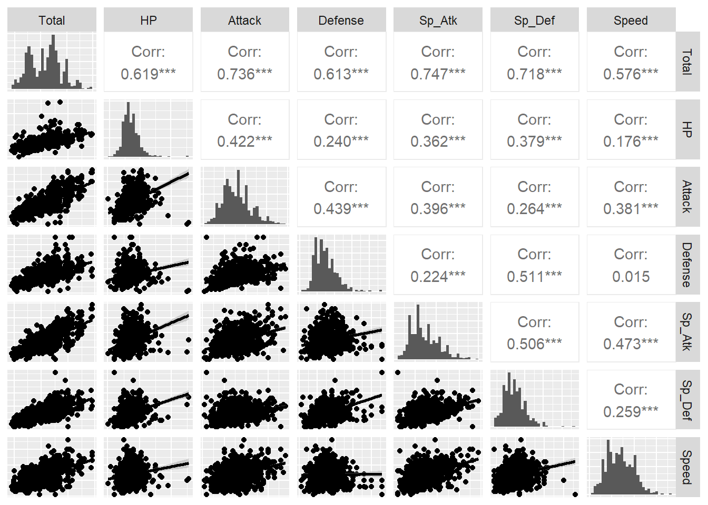
4 Preguntas frecuentes
Esta sección esta tomada del libro de Motuslky. Intuitive Biostatistics
- ¿Importa cual variable sea denominada x y cual es y?
No. X y Y son completamente simétricas en los calculo de correlación. Sin embargo, esto no es cierto en el caso de la regresión (siguiente capitulo).
- ¿X y Y tienen que ser medidas en la misma unidad para realizar los calculos de correlación?
X y Y no tienen que ser medidas en la misma unidad pero pueden serlo.
- ¿Por qué no hay una línea con el mejor ajuste en los gráficos de este capitulo?
La correlación cuantifica la relación entre dos variables pero no ajusta un modelo a los datos, a diferencia de la regresión.
- ¿Si se cambia el orden de X y Y también cambiará el valor de \(r\)?
No. X y Y son completamente simetricos en el calculo e interpretación del coeficiente de correlación.
- Puede el valor de \(r\) ser expresado en porcentaje?
No. El valor de r va de -1 a 1. No es una fracción por lo que no puede expresarse en porcentaje.
sessionInfo()R version 4.0.5 (2021-03-31)
Platform: x86_64-w64-mingw32/x64 (64-bit)
Running under: Windows 10 x64 (build 19041)
Matrix products: default
locale:
[1] LC_COLLATE=English_United States.1252
[2] LC_CTYPE=English_United States.1252
[3] LC_MONETARY=English_United States.1252
[4] LC_NUMERIC=C
[5] LC_TIME=English_United States.1252
attached base packages:
[1] stats graphics grDevices utils datasets methods base
other attached packages:
[1] GGally_2.1.0 corrplot_0.84 pastecs_1.3.21 ggpubr_0.4.0
[5] rstatix_0.7.0 forcats_0.5.1 stringr_1.4.0 dplyr_1.0.5
[9] purrr_0.3.4 readr_1.4.0 tidyr_1.1.3 tibble_3.0.4
[13] ggplot2_3.3.3 tidyverse_1.3.1 workflowr_1.6.2
loaded via a namespace (and not attached):
[1] nlme_3.1-152 fs_1.5.0 lubridate_1.7.10 RColorBrewer_1.1-2
[5] httr_1.4.2 rprojroot_2.0.2 tools_4.0.5 backports_1.2.1
[9] utf8_1.2.1 R6_2.5.0 mgcv_1.8-33 DBI_1.1.0
[13] colorspace_2.0-0 withr_2.4.2 tidyselect_1.1.1 mnormt_2.0.2
[17] curl_4.3 compiler_4.0.5 git2r_0.27.1 cli_2.5.0
[21] rvest_1.0.0 xml2_1.3.2 labeling_0.4.2 scales_1.1.1
[25] psych_2.0.12 digest_0.6.27 foreign_0.8-81 rmarkdown_2.6
[29] rio_0.5.16 pkgconfig_2.0.3 htmltools_0.5.1.1 dbplyr_2.1.1
[33] rlang_0.4.11 readxl_1.3.1 rstudioapi_0.13 farver_2.0.3
[37] generics_0.1.0 jsonlite_1.7.2 zip_2.1.1 car_3.0-10
[41] magrittr_2.0.1 Matrix_1.3-2 Rcpp_1.0.5 munsell_0.5.0
[45] fansi_0.4.2 abind_1.4-5 lifecycle_1.0.0 stringi_1.5.3
[49] whisker_0.4 yaml_2.2.1 carData_3.0-4 plyr_1.8.6
[53] grid_4.0.5 parallel_4.0.5 promises_1.1.1 crayon_1.4.1
[57] lattice_0.20-41 splines_4.0.5 haven_2.3.1 hms_1.0.0
[61] tmvnsim_1.0-2 knitr_1.30 ps_1.5.0 pillar_1.6.0
[65] boot_1.3-27 ggsignif_0.6.0 reprex_2.0.0 glue_1.4.2
[69] evaluate_0.14 data.table_1.13.6 modelr_0.1.8 vctrs_0.3.8
[73] httpuv_1.5.4 cellranger_1.1.0 gtable_0.3.0 reshape_0.8.8
[77] assertthat_0.2.1 xfun_0.23 openxlsx_4.2.3 broom_0.7.6
[81] later_1.1.0.1 ellipsis_0.3.1